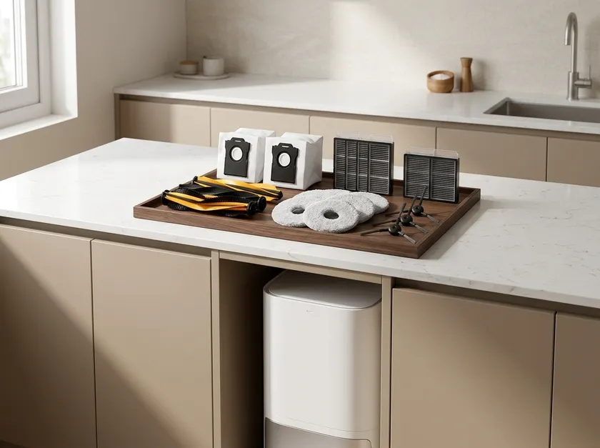

드리미 (Dreame)
온수 물걸레 세척 기종을 위한 드리미 전용 세정제 1L 노즐·잔량 관리법
글·구성: 제이상점 · 기종별 1:1 호환 실물 점검 · 교체 주기 비교표 · 스마트스토어 패키지 안내

핵심 관리 · 선택 체크포인트
- 60~80도 온수로 물걸레 패드를 세척하는 드리미 올인원 로봇청소기는 고온 환경에서도 거품이 과하게 일지 않고 배관에 잔여물이 남지 않는 전용 포뮬러 세정제를 사용하는 것이 안전합니다.
- 세제 카트리지 투입구 결정 예방과 1L 대용량 리필 루틴: 자동 세제 투입 카트리지를 오래 쓰다
- 드리미 전용 클리너 1L 옵션 및 호환 기종 체크표: 보유 기종의 세제 투입 방식과 평소 물걸레 청소 빈도에 맞춰 옵션을 선택해 보세요.
- 측면 손잡이 홈이 있는 용기라 한 손으로 들고 도크 세제통에 따르기 편리합니다.
- 스테이션 옆 사이드 테이블 비치와 다용도실 캐디 보관: 자주 쓰는 1병은 스테이션 옆 테이블에 두고, 복수구매할인으로 함께 준비한 예비 1병은 다용도실 수납 캐디에 원형 걸레 패드·필터와 함께 보관하면 관리 동선이 정돈됩니다.
실물 부품 디테일 · 관리 구성 이미지




부품 규격 · 점검 기준표
| 옵션 및 확인 항목 | 세부 내용 | 관리·선택 포인트 |
|---|---|---|
| 1L - 1병 | 드리미 전용 세정제 1L 본품 1병 | 스테이션 옆 사이드 테이블에 두고 깔끔하게 리필할 때 |
| 1L - 2병 (복수구매할인) | 드리미 전용 세정제 1L 본품 2병 묶음 | 온수 물걸레 세척을 매일 돌려 예비 병을 할인 구비할 때 |
| 호환 모델 확인 | X50·X40·X30·L20·L10s 등 드리미 라인업 | 모델별 자동 세제통 투입 또는 정수통 희석 비율 설명서 확인 |
💡 교체 주기가 겹치는 필터·브러시·물걸레·더스트백은 단품 배송비를 여러 번 내기보다 드리미 세제 기간별 세트(3개월·6개월·1년)로 미리 구비해 두면 물세척 후 24시간 교대 건조까지 끊김 없이 관리할 수 있습니다.
자주 묻는 질문 (FAQ)
Q. 드리미클리너1L의 1L - 1병 규격과 관리 기준은 무엇인가요?
A. 드리미 전용 세정제 1L 본품 1병 규격을 사용하며, 스테이션 옆 사이드 테이블에 두고 깔끔하게 리필할 때 기준으로 점검·교체하면 청소 효율을 안정적으로 유지할 수 있습니다.
Q. 드리미클리너1L의 1L - 2병 (복수구매할인) 규격과 관리 기준은 무엇인가요?
A. 드리미 전용 세정제 1L 본품 2병 묶음 규격을 사용하며, 온수 물걸레 세척을 매일 돌려 예비 병을 할인 구비할 때 기준으로 점검·교체하면 청소 효율을 안정적으로 유지할 수 있습니다.
Q. 드리미클리너1L의 호환 모델 확인 규격과 관리 기준은 무엇인가요?
A. X50·X40·X30·L20·L10s 등 드리미 라인업 규격을 사용하며, 모델별 자동 세제통 투입 또는 정수통 희석 비율 설명서 확인 기준으로 점검·교체하면 청소 효율을 안정적으로 유지할 수 있습니다.
제이상점 1:1 검수 추천 패키지 · 구매 안내
![[호환] 드리미 X50s Pro Master 소모품 세제 걸레 1년세트](../../assets/img/dreame-x50s-pro-master-product-18e92aa9.webp)
함께 많이 찾는 보충 구성
대표 구성 참고가 77,000원대 (옵션·쿠폰별 스마트스토어 결제 화면 기준)
1년 세트6개월 세트3개월 세트
☑️ 주문 전 확인해 두면 좋은 제이상점 안심 포인트
· 기종별 1:1 전용 규격 검수: 모델명·연식에 맞는 호환·정품 구성을 검수해 오주문 불안을 줄였습니다.
· 해외직배송 미리 주문 팁: 중국 구매대행·해외직배송 상품이므로 마지막 여분 1개를 꺼내 쓰는 시점에 개인통관고유부호와 함께 여유 있게 주문해 두시면 훨씬 경제적인 비용으로 끊김 없이 교체하실 수 있습니다.
· 기종별 1:1 전용 규격 검수: 모델명·연식에 맞는 호환·정품 구성을 검수해 오주문 불안을 줄였습니다.
· 해외직배송 미리 주문 팁: 중국 구매대행·해외직배송 상품이므로 마지막 여분 1개를 꺼내 쓰는 시점에 개인통관고유부호와 함께 여유 있게 주문해 두시면 훨씬 경제적인 비용으로 끊김 없이 교체하실 수 있습니다.
📖 더 많은 가정 내 사용 스토리와 상세 후기가 궁금하시다면
📱 네이버 블로그 모바일 원문 보기 ↗